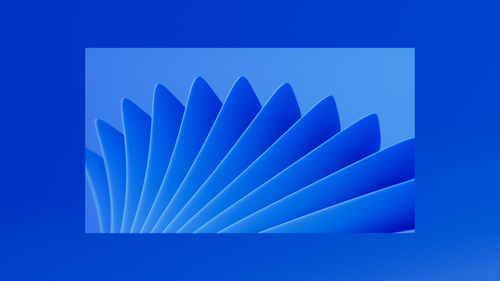
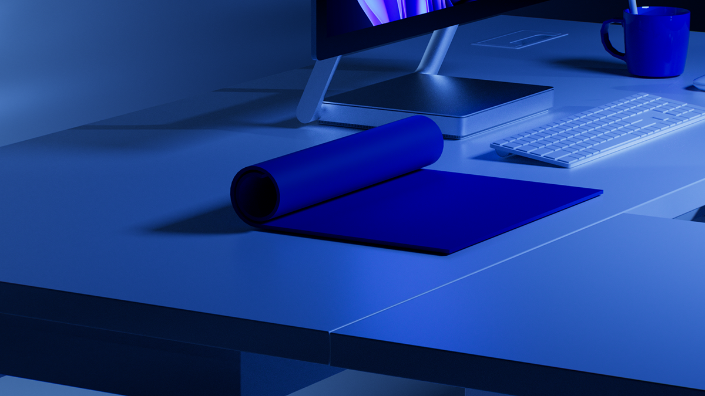
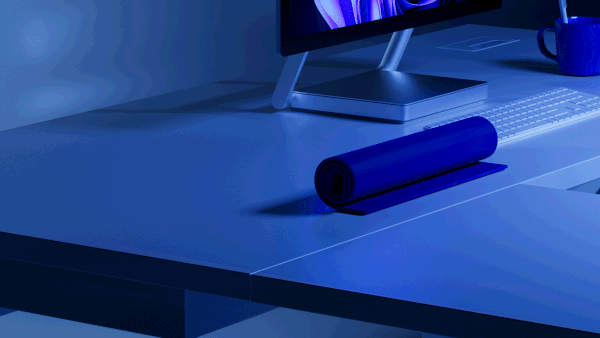
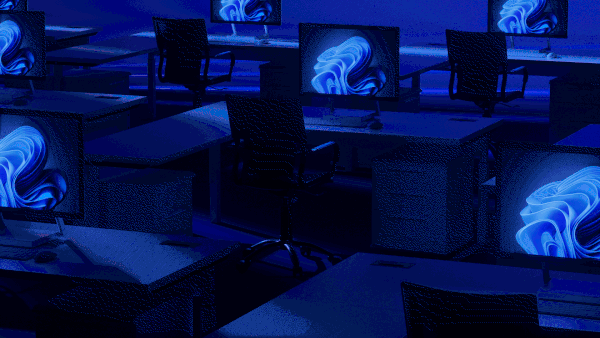
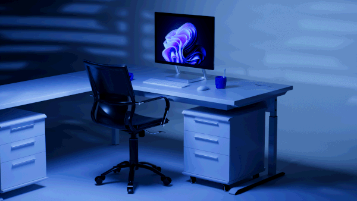

Projet motion 3D autour de l'identité visuelle Windows — exploration des formes géométriques emblématiques de la marque dans un environnement CGI immersif. Les quatre couleurs du logo deviennent des surfaces réfléchissantes animées, jouant avec la lumière et la profondeur de champ. La direction artistique fusionne héritage graphique et langage visuel contemporain. Une réinterprétation premium d'une icône du design digital.




